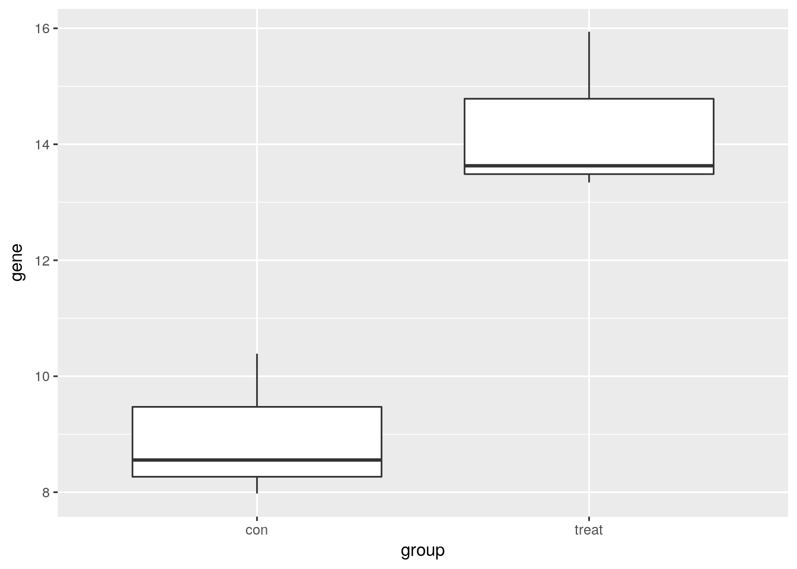
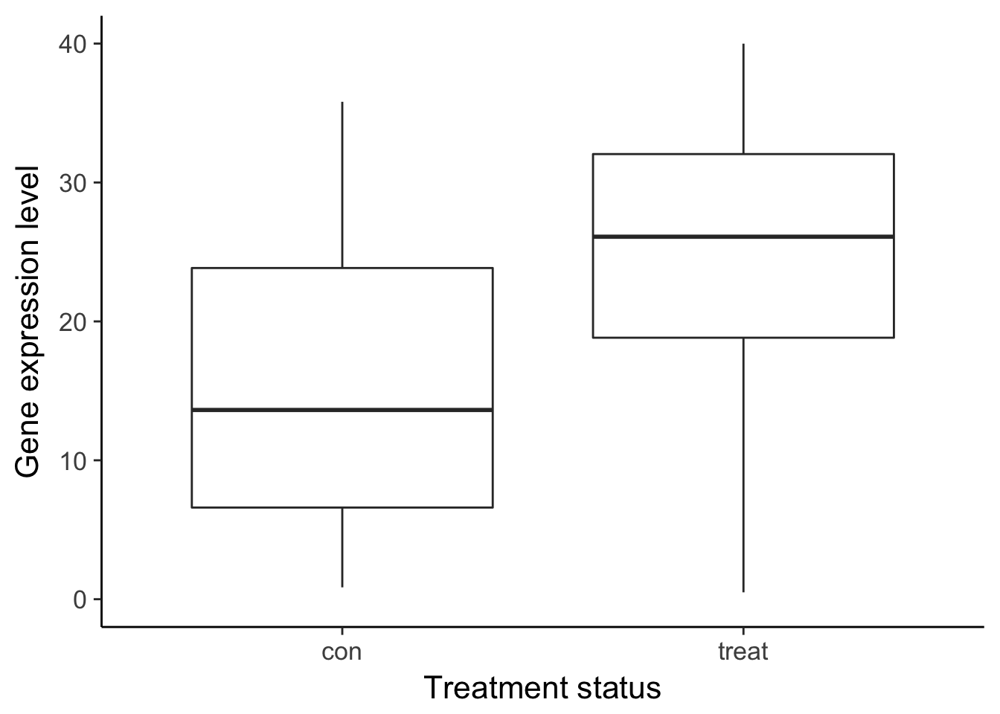
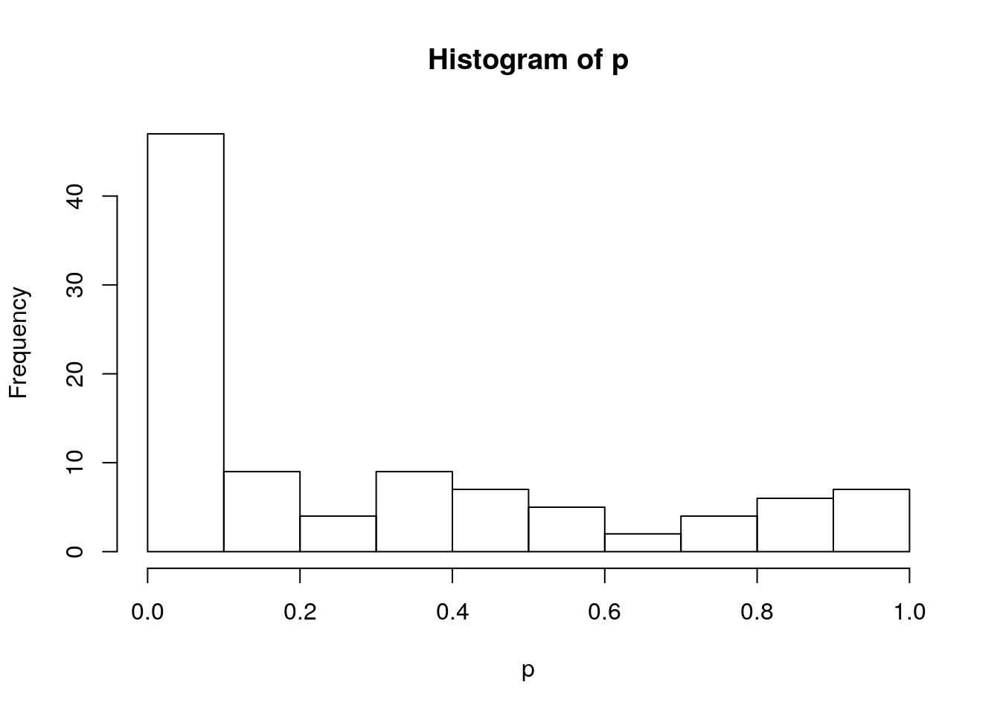
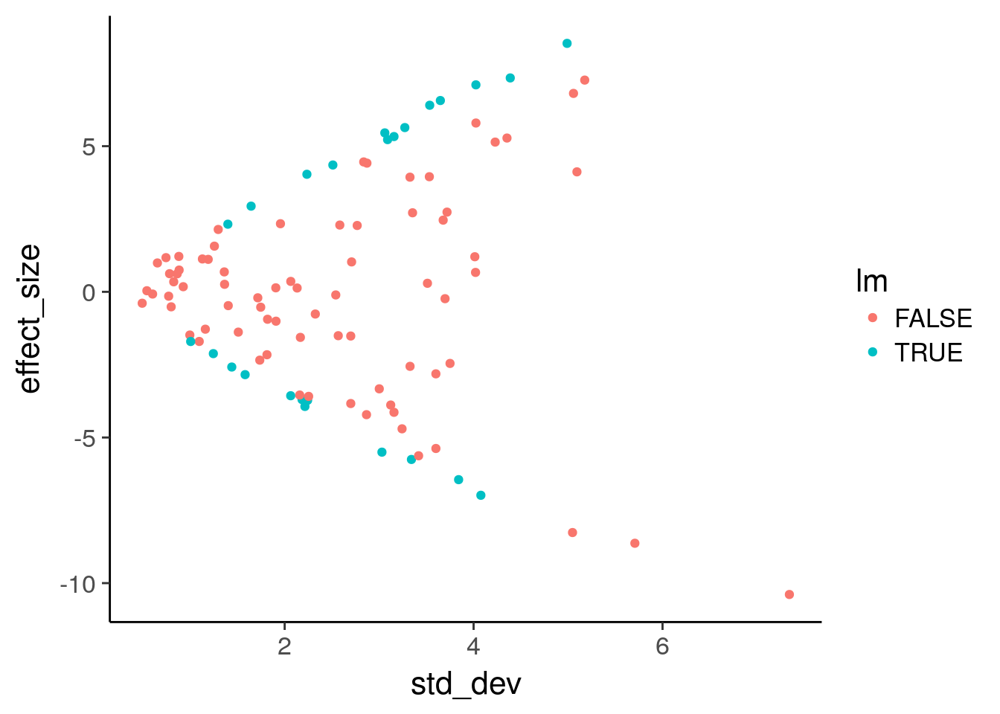
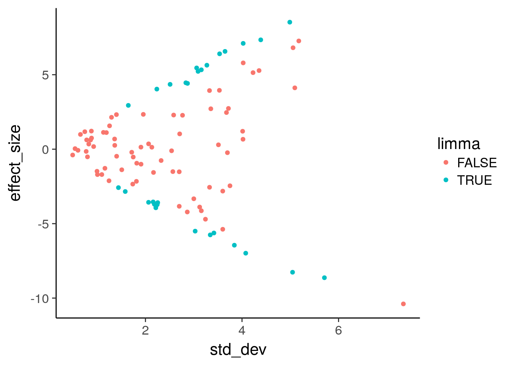
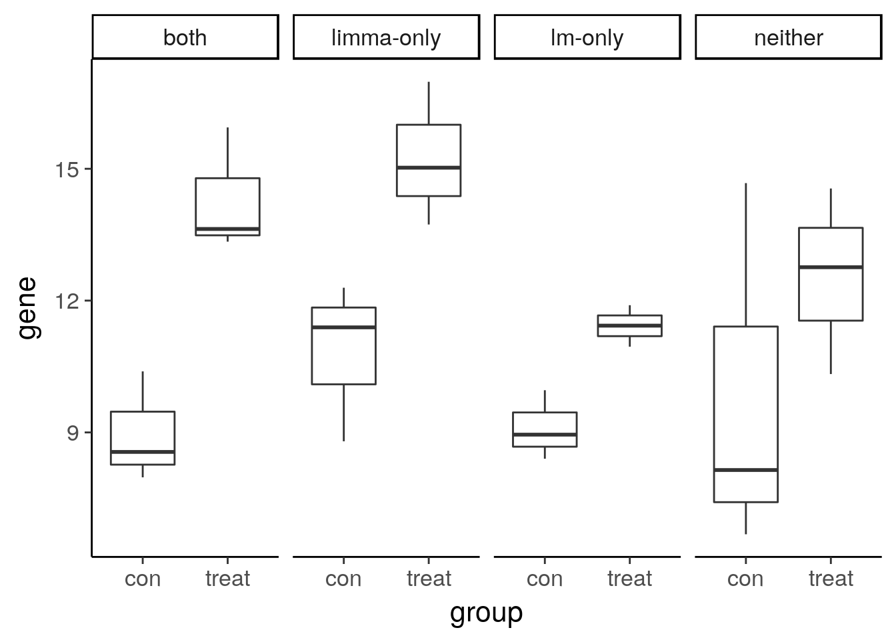

Introduction to differential expression analysis
John Blischak
2018-02-10
Last updated: 2018-05-23
workflowr checks: (Click a bullet for more information)-
✔ R Markdown file: up-to-date
Great! Since the R Markdown file has been committed to the Git repository, you know the exact version of the code that produced these results.
-
✔ Environment: empty
Great job! The global environment was empty. Objects defined in the global environment can affect the analysis in your R Markdown file in unknown ways. For reproduciblity it’s best to always run the code in an empty environment.
-
✔ Seed:
set.seed(12345)The command
set.seed(12345)was run prior to running the code in the R Markdown file. Setting a seed ensures that any results that rely on randomness, e.g. subsampling or permutations, are reproducible. -
✔ Session information: recorded
Great job! Recording the operating system, R version, and package versions is critical for reproducibility.
-
Great! You are using Git for version control. Tracking code development and connecting the code version to the results is critical for reproducibility. The version displayed above was the version of the Git repository at the time these results were generated.✔ Repository version: 3e36241
Note that you need to be careful to ensure that all relevant files for the analysis have been committed to Git prior to generating the results (you can usewflow_publishorwflow_git_commit). workflowr only checks the R Markdown file, but you know if there are other scripts or data files that it depends on. Below is the status of the Git repository when the results were generated:
Note that any generated files, e.g. HTML, png, CSS, etc., are not included in this status report because it is ok for generated content to have uncommitted changes.Ignored files: Ignored: .DS_Store Ignored: .Rhistory Ignored: .Rproj.user/ Ignored: figure/.DS_Store Ignored: figure/ch02/.DS_Store
Expand here to see past versions:
| File | Version | Author | Date | Message |
|---|---|---|---|---|
| Rmd | 3e36241 | John Blischak | 2018-05-23 | Update to 1.0 |
| html | 3e36241 | John Blischak | 2018-05-23 | Update to 1.0 |
| html | 3144b03 | John Blischak | 2018-05-18 | Build site. |
| Rmd | d4e2da5 | John Blischak | 2018-05-18 | Add code comments and save plots for slides for ch01. |
| Rmd | 645a9dc | John Blischak | 2018-04-06 | Minor edit. |
| html | 201bbf1 | John Blischak | 2018-04-06 | Build site. |
| Rmd | 3571e14 | John Blischak | 2018-04-06 | Save intermediate data files. |
| Rmd | 0c36646 | John Blischak | 2018-04-06 | Continue working on ch01 exercises. |
| Rmd | 0536832 | John Blischak | 2018-04-06 | Start using new simulation for ch01. |
| html | 543057b | John Blischak | 2018-02-23 | Build site. |
| Rmd | f3df390 | John Blischak | 2018-02-23 | Work on linear models slides. |
| html | 6209669 | John Blischak | 2018-02-16 | Build site. |
| Rmd | 13eba3e | John Blischak | 2018-02-16 | Document simulation functions. |
| Rmd | 0d41ace | John Blischak | 2018-02-16 | Improve the plots’ readability and cross-comparability. |
| Rmd | 5fff9c0 | John Blischak | 2018-02-16 | Use explained versus residual sum of squares since it is more straightforward. |
| Rmd | b62ae8e | John Blischak | 2018-02-16 | Work on plots to build intution for linear regression. |
| Rmd | aa45d23 | John Blischak | 2018-02-16 | Refactor code to create a synthetic data set for ch 01. |
| Rmd | 7f3b194 | John Blischak | 2018-02-12 | Some ch01 exercises. |
| Rmd | 1638971 | John Blischak | 2018-02-12 | Spell check. |
| Rmd | 804cd26 | John Blischak | 2018-02-10 | Start transcript for ch01 video on linear models. |
| Rmd | 221239f | John Blischak | 2018-02-10 | Add scaffolding for ch01 from index. |
Cover the basics of the biology and the statistics.
gexp <- readRDS("../data/ch01.rds")
stats <- readRDS("../data/ch01-stats.rds")
de <- readRDS("../data/de.rds")
single_gene <- readRDS("../data/single_gene.rds")
compare <- readRDS("../data/compare.rds")What is differential expression? (Video)
Describe a simple model of gene regulation (transcription factors, DNA, RNA, protein) and the functional genomics technologies used to measure the various features. Focus on the type of data they return (continuous vs. discrete).
Functional genomics technologies (MultipleChoiceExercise)
Choose which is true. The options will be various combinations of genomics technologies, what they measure, and the type of data they return. For example, “Microarrays measure RNA levels and return continuous data. ChIP-seq measures transcription factor binding to DNA and returns discrete data.” is true.
Visualize one differentially expressed gene
Visualize one differentially expressed gene with boxplots (geom_boxplot).
library("ggplot2")
print(single_gene) group gene
1 con 8.555641
2 con 7.977472
3 con 10.388985
4 treat 13.629643
5 treat 15.940644
6 treat 13.341958# Create boxplots of gene expression for both groups
ggplot(single_gene, aes(x = group, y = gene)) +
geom_boxplot()
Visualize many differentially expressed genes
Visualize many differentially expressed genes with a heatmap (stats::heatmap).
# Check the dimensions
dim(gexp)[1] 100 6# View the first few rows
head(gexp) con1 con2 con3 treat1 treat2 treat3
gene01 11.034305 7.693824 15.220120 5.539417 7.662184 13.37325
gene02 6.681872 8.144218 14.673822 14.551493 12.759165 10.32855
gene03 11.550606 15.551538 10.857151 13.525733 11.723725 12.09515
gene04 14.316391 8.371045 14.139368 7.759454 13.570094 16.37769
gene05 8.845249 7.663989 9.342168 10.534286 13.306553 9.02550
gene06 2.684912 10.244040 4.705581 8.920392 9.902485 10.62007# Plot a heatmap
heatmap(gexp)
What is a linear model? (Video)
Review the basics of multiple linear regression (dependent vs independent variables, continuous vs discrete covariates, intercept term, error term). Demonstrate how to specify equations in R (e.g. lm and model.matrix).
library("dplyr")
Attaching package: 'dplyr'The following objects are masked from 'package:stats':
filter, lagThe following objects are masked from 'package:base':
intersect, setdiff, setequal, unionlibrary("ggplot2")
df_vis <- data.frame(status = rep(c("con", "treat"), each = 50)) %>%
mutate(gene_de = c(rpois(n() / 2, lambda = 12), rpois(n() / 2, lambda = 30)),
gene_var =c(rpois(n() / 2, lambda = 15) + rnorm(n() / 2, sd = 10),
rpois(n() / 2, lambda = 25) + rnorm(n() / 2, sd = 10)))
ggplot(df_vis, aes(x = status, y = gene_de)) +
geom_boxplot() +
theme_classic(base_size = 16) +
ylim(0, 40) +
labs(x = "Treatment status", y = "Gene expression level")Warning: Removed 1 rows containing non-finite values (stat_boxplot).
Expand here to see past versions of unnamed-chunk-3-1.png:
| Version | Author | Date |
|---|---|---|
| 3e36241 | John Blischak | 2018-05-23 |
| 201bbf1 | John Blischak | 2018-04-06 |
| 543057b | John Blischak | 2018-02-23 |
| 6209669 | John Blischak | 2018-02-16 |
ggsave("../figure/ch01/gene-de.png", width = 5, height = 6)Warning: Removed 1 rows containing non-finite values (stat_boxplot).ggplot(df_vis, aes(x = status, y = gene_var)) +
geom_boxplot() +
theme_classic(base_size = 16) +
ylim(0, 40) +
labs(x = "Treatment status", y = "Gene expression level")Warning: Removed 8 rows containing non-finite values (stat_boxplot).
Expand here to see past versions of unnamed-chunk-3-2.png:
| Version | Author | Date |
|---|---|---|
| 3e36241 | John Blischak | 2018-05-23 |
| 201bbf1 | John Blischak | 2018-04-06 |
ggsave("../figure/ch01/gene-ambiguous.png", width = 5, height = 6)Warning: Removed 8 rows containing non-finite values (stat_boxplot).Transcript: As you just visualized, differential expression describes the situation in which a gene has a different mean expression level between conditions. While some gene expression patterns are easily diagnosed as differential expression or not from a quick visualization, you also saw some examples that were more ambiguous. Furthermore, you need a method that is more robust than a quick visual inspection and also scales to thousands of genes. For this you will use the tools of statistical inference to determine if the difference in mean expression level is larger than that expected by chance. Specifically, you will use linear models to perform the hypothesis tests. Linear models are an ideal choice for genomics experiments because their flexibility and robustness to assumptions allow you to conveniently model data from various study designs and data sources.
You should have already been introduced to linear models, for example in a DataCamp course such as Correlation and Regression, or in an introductory statistics course. Here I’ll review the terminology we will use in the remainder of the course, how to specify a linear model in R, and the intuition behind linear models.

Temperature experiment
\[ Y = \beta_0 + \beta_1 X_1 + \epsilon \]
In this equation of a linear model, Y is the response variable. It must be a continuous variable. In the context of differential expression, it is a relative measure of either RNA or protein expression level for one gene. \(X_1\) is an explanatory variable, which can be continuous or discrete, for example, control group versus treatment, or mutant versus wild type. \(\beta_1\) quantifies the effect of the explanatory variable on the response variable. Furthermore, we can add additional explanatory variables to the equation for more complicated experimental designs. Lastly, models the random noise in the measurements.
In R, you specify a linear model with the function lm. This uses R’s formula syntax. On the left is the object that contains the response variable, and to the right of the tilde are the objects that contain the explanatory variables.
lm(y ~ x1)A second explanatory variable can be added with a plus sign.
\[ Y = \beta_0 + \beta_1 X_1 + \beta_2 X_2 + \epsilon \]
lm(y ~ x1 + x2)Building some intuition.
library("broom")
library("cowplot")
library("dplyr")
library("ggplot2")
theme_set(theme_classic(base_size = 16))
# Simulate a linear regression.
#
# n = sample size
# effect = slope
# error = standard deviation of distribution of residuals
# seed = seed for random number generator
#
# Returns a data.frame with the following columns:
#
# x Explanatory variable
# y Response variable
# y_bar Mean of response variable
# intercept Intercept of least squares regression line
# slope Slope of least squares regression line
# y_hat Fitted values
# fstat F-statistic
# ss_exp Explained sum of squares
# ss_res Residual sum of squares (noise)
sim_lm <- function(n, effect, error, seed = 1) {
stopifnot(is.numeric(n), n > 0, length(n) == 1)
stopifnot(is.numeric(effect), length(effect) == 1)
stopifnot(is.numeric(error), error > 0, length(error) == 1)
stopifnot(is.numeric(seed), length(seed) == 1)
set.seed(seed)
x = runif(n, min = -25, max = 25)
y = x * effect + rnorm(n, sd = error)
y_bar = mean(y)
mod <- lm(y ~ x)
coefs <- coef(mod)
intercept <- coefs[1]
slope <- coefs[2]
y_hat = fitted(mod)
anova_tidy <- tidy(anova(mod))
fstat <- anova_tidy$statistic[1]
ss <- anova_tidy$sumsq
ss_exp <- ss[1]
ss_res <- ss[2]
stopifnot(ss_exp - sum((y_hat - y_bar)^2) < 0.01)
stopifnot(ss_res - sum(residuals(mod)^2) < 0.01)
return(data.frame(x, y, y_bar, intercept, slope, y_hat, fstat, ss_exp, ss_res,
row.names = 1:n))
}
# Visualize the residual sum of squares
plot_ss_res <- function(d) {
ggplot(d, aes(x = x, y = y)) +
geom_point() +
geom_abline(aes(intercept = intercept, slope = slope)) +
geom_linerange(aes(ymin = y, ymax = y_hat), color = "red",
linetype = "dashed") +
geom_text(aes(x = quantile(x, 0.25), y = quantile(y, 0.75),
label = round(ss_res, 2)), color = "red") +
labs(title = "Residual sum of squares (noise)") +
ylim(-60, 60)
}
# Visualize the explained sum of squares
plot_ss_exp <- function(d) {
ggplot(d, aes(x = x, y = y)) +
geom_abline(aes(intercept = intercept, slope = slope)) +
geom_hline(aes(yintercept = y_bar)) +
geom_linerange(aes(ymin = y_hat, ymax = y_bar), color = "blue",
linetype = "dashed") +
geom_text(aes(x = quantile(x, 0.25), y = quantile(y, 0.75),
label = round(ss_exp, 2)), color = "blue") +
labs(title = "Explained sum of squares") +
ylim(-60, 60)
}
# baseline
baseline <- sim_lm(n = 10, effect = 2, error = 5)
baseline_ss_res <- plot_ss_res(baseline)
dir.create("../figure/ch01/", recursive = TRUE, showWarnings = FALSE)
ggsave("../figure/ch01/baseline_ss_res.png", baseline_ss_res, width = 5, height = 6)
baseline_ss_exp <- plot_ss_exp(baseline)
ggsave("../figure/ch01/baseline_ss_exp.png", baseline_ss_exp, width = 5, height = 6)
plot_grid(baseline_ss_res, baseline_ss_exp)
Expand here to see past versions of inuition-1.png:
| Version | Author | Date |
|---|---|---|
| 543057b | John Blischak | 2018-02-23 |
| 6209669 | John Blischak | 2018-02-16 |
baseline$fstat[1][1] 280.3557# Increased error
more_error <- sim_lm(n = 10, effect = 2, error = 10)
more_error_ss_res <- plot_ss_res(more_error)
dir.create("../figure/ch01/", recursive = TRUE, showWarnings = FALSE)
ggsave("../figure/ch01/more_error_ss_res.png", more_error_ss_res, width = 5, height = 6)
more_error_ss_exp <- plot_ss_exp(more_error)
ggsave("../figure/ch01/more_error_ss_exp.png", more_error_ss_exp, width = 5, height = 6)
plot_grid(more_error_ss_res, more_error_ss_exp)
Expand here to see past versions of inuition-2.png:
| Version | Author | Date |
|---|---|---|
| 543057b | John Blischak | 2018-02-23 |
| 6209669 | John Blischak | 2018-02-16 |
more_error$fstat[1][1] 72.89125# Decreased signal
less_signal <- sim_lm(n = 10, effect = 1, error = 5)
less_signal_ss_res <- plot_ss_res(less_signal)
dir.create("../figure/ch01/", recursive = TRUE, showWarnings = FALSE)
ggsave("../figure/ch01/less_signal_ss_res.png", less_signal_ss_res, width = 5, height = 6)
less_signal_ss_exp <- plot_ss_exp(less_signal)
ggsave("../figure/ch01/less_signal_ss_exp.png", less_signal_ss_exp, width = 5, height = 6)
plot_grid(less_signal_ss_res, less_signal_ss_exp)
Expand here to see past versions of inuition-3.png:
| Version | Author | Date |
|---|---|---|
| 543057b | John Blischak | 2018-02-23 |
| 6209669 | John Blischak | 2018-02-16 |
less_signal$fstat[1][1] 72.89125Standard linear model for differential expression of one gene
Run lm on one gene.
head(single_gene) group gene
1 con 8.555641
2 con 7.977472
3 con 10.388985
4 treat 13.629643
5 treat 15.940644
6 treat 13.341958# Fit the linear model
mod <- lm(gene ~ group, data = single_gene)
# Summarize the results
result <- summary(mod)
result$coefficients Estimate Std. Error t value Pr(>|t|)
(Intercept) 8.974033 0.7761637 11.562035 0.0003196394
grouptreat 5.330049 1.0976613 4.855823 0.0083043428Standard linear model for differential expression of many genes
Use for loop to run lm on many genes (exact number of genes will be determined by 5 sec time limit for DataCamp exercises).
group <- rep(c("con", "treat"), each = ncol(gexp) / 2)dim(gexp)[1] 100 6print(group)[1] "con" "con" "con" "treat" "treat" "treat"# Initialize a vector to save the p-value from testing each gene
p <- numeric(length = nrow(gexp))
# Use a for loop to test each gene
for (i in 1:length(p)) {
# Fit the model
mod <- lm(gexp[i, ] ~ group)
# Extract the p-value
result <- summary(mod)
p[i] <- result$coefficients[2, 4]
}
# Visualize p-value distribution with a histogram
hist(p)
Visualize results of standard differential expression analysis
Use geom_point to plot effect size versus variance and color by statistical significance.
head(de) effect_size std_dev lm limma
1 -2.4577980 3.750555 FALSE FALSE
2 2.7130980 3.353835 FALSE FALSE
3 -0.2048963 1.715542 FALSE FALSE
4 0.2934781 3.511502 FALSE FALSE
5 2.3383110 1.955378 FALSE FALSE
6 3.9361382 3.326517 FALSE FALSE# Plot effect size (y-axis) vs. standard deviation (x-axis)
ggplot(de, aes(x = std_dev, y = effect_size, color = lm)) +
geom_point()
limma: linear models for functional genomics (Video)
Explain the advantages of using limma for functional genomics experiments over traditional linear models: 1) share information across genes to reduce uncertainty of variance, 2) flexible system for specifying contrasts of interest, 3) integrated into standard differential expression workflow. Introduce a limma workflow diagram to orient the individual steps in the following chapters within the larger analysis.
limma for differential expression of many genes
Run pre-written limma code to easily test thousands of genes.
library("limma")
print(group)[1] "con" "con" "con" "treat" "treat" "treat"# Setup the study design matrix
design <- model.matrix(~group)
colnames(design) <- c("Intercept", "group")
# Fit the model
fit <- lmFit(gexp, design)
fit <- eBayes(fit)
# Summarize results
results <- decideTests(fit[, "group"])
summary(results) group
-1 15
0 71
1 14Visualize results of limma differential expression analysis
Use geom_point to plot effect size versus variance and color by statistical significance.
head(de) effect_size std_dev lm limma
1 -2.4577980 3.750555 FALSE FALSE
2 2.7130980 3.353835 FALSE FALSE
3 -0.2048963 1.715542 FALSE FALSE
4 0.2934781 3.511502 FALSE FALSE
5 2.3383110 1.955378 FALSE FALSE
6 3.9361382 3.326517 FALSE FALSE# View the number of discrepancies
table(de$lm, de$limma)
FALSE TRUE
FALSE 68 7
TRUE 3 22# Plot effect size (y-axis) vs. standard deviation (x-axis)
ggplot(de, aes(x = std_dev, y = effect_size, color = limma)) +
geom_point()
The benefit of sharing information across genes
Visualize the gene expression pattern of a gene called DE by a traditional linear model but not by limma.
head(compare) type group gene
1 neither con 6.681872
2 both con 8.555641
3 lm-only con 9.959914
4 limma-only con 11.391149
5 neither con 8.144218
6 both con 7.977472# Plot gene expression (gene; y-axis) vs. group (x-axis)
ggplot(compare, aes(x = group, y = gene)) +
geom_boxplot() +
facet_wrap(~type, nrow = 1)
Session information
sessionInfo()R version 3.3.3 (2017-03-06)
Platform: x86_64-apple-darwin13.4.0 (64-bit)
Running under: OS X Yosemite 10.10.5
locale:
[1] en_US.UTF-8/en_US.UTF-8/en_US.UTF-8/C/en_US.UTF-8/en_US.UTF-8
attached base packages:
[1] stats graphics grDevices utils datasets methods base
other attached packages:
[1] limma_3.30.13 cowplot_0.9.2 broom_0.4.4 bindrcpp_0.2 dplyr_0.7.4
[6] ggplot2_2.2.1
loaded via a namespace (and not attached):
[1] Rcpp_0.12.14 pillar_1.2.2 git2r_0.21.0
[4] plyr_1.8.4 workflowr_1.0.1 bindr_0.1.1
[7] R.methodsS3_1.7.1 R.utils_2.6.0 tools_3.3.3
[10] digest_0.6.13 evaluate_0.10.1 tibble_1.4.2
[13] gtable_0.2.0 nlme_3.1-131 lattice_0.20-35
[16] pkgconfig_2.0.1 rlang_0.2.0 psych_1.8.3.3
[19] parallel_3.3.3 yaml_2.1.16 stringr_1.3.0
[22] knitr_1.20 rprojroot_1.3-2 grid_3.3.3
[25] glue_1.2.0 R6_2.2.2 foreign_0.8-69
[28] rmarkdown_1.9.12 reshape2_1.4.3 tidyr_0.7.2
[31] purrr_0.2.4 magrittr_1.5 whisker_0.3-2
[34] backports_1.1.2 scales_0.5.0 htmltools_0.3.6
[37] mnormt_1.5-5 assertthat_0.2.0 colorspace_1.3-2
[40] labeling_0.3 stringi_1.1.7 lazyeval_0.2.1
[43] munsell_0.4.3 R.oo_1.22.0
This reproducible R Markdown analysis was created with workflowr 1.0.1